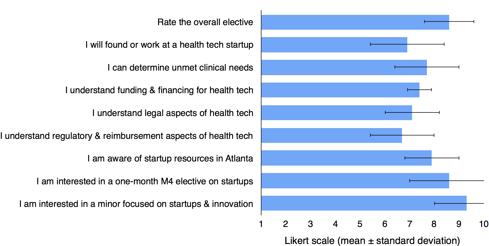

In this course, 2nd year medical students learn about tech startups, which have transformed our lives and hopefully will also improve patient care.
Software is eating the world. Recently, the tech world has set its sights on healthcare. Advances in cloud computing, smartphones, genomics, wearable sensors, etc. have enabled new interactions between computer science / engineering and medicine. This union is called "digital health". New technologies plus a national shift to value-based-care has incentivized startups to improve healthcare.
We envision a future where clinicians collaborate with technologists, patients, funders, and other stakeholders to advance patient care through technology innovation and entrepreneurship. However, opportunities for clinicans in tech are difficult to pursue due to a lack of exposure, cultural misalignment, and geographic barriers. Our goal is to infuse some Silicon Valley spirit into medicine.
This course was offered in Fall 2014 and 2015. Note it is not being offered in Fall 2016.
Default sessions are 1-3 pm at SoM 253A.
| Date | Speaker | Topic | Video / Slides |
|---|---|---|---|
| 8/21 | Angela Fusaro, MD Assistant Professor Department of Emergency Medicine Emory University School of Medicine |
Problem-based innovation | YouTube / slides |
| 8/21 | Arun Mohan, MD, MBA CMO, ApolloMD |
Healthcare finance & care delivery | YouTube |
| 9/11 | Harold Solomon Principal, GT VentureLab |
Evidence-based entrepreneurship | YouTube |
| 9/18 | Richard Duszak, MD Professor & Vice Chair for Health Policy and Practice Department of Radiology and Imaging Sciences Emory University School of Medicine |
Healthcare economics & reimbursement | Slides |
| 9/22 | Arash Harzand, MD, MBA Cardiology Fellow, Emory Director of Business Development, Forge |
Digital health research & Atlanta startup resources | |
| 9/25 | Evan McClure MD/MBA student, Emory Felipe Rojas MBA student, Emory |
Angel, seed, and VC funding Drug royalties & pharma |
YouTube (funding) Handout (funding) Slides (drug royalties) |
| 10/9 | Nate Gross, MD, MBA Co-founder, Rock Health & Doximity |
Trends & careers in digital health | |
| 10/27 | Nicole Morris, Esq Director of TI:GER and Professor in Practice Emory University School of Law |
Patents & intellectual property | Slides (IP) |
| 10/29 | Daniel Brat, MD, PhD Professor & Chair, Department of Biomedical Informatics Vice-Chair, Department of Pathology and Laboratory Medicine Emory University School of Medicine Nabile Safdar, MD, MPH Associate Professor & Vice Chair for Imaging Informatics Department of Radiology and Imaging Sciences Emory University School of Medicine |
Informatics, innovation, & industry | |
| 11/10 | Angela Fusaro, MD Assistant Professor Department of Emergency Medicine Emory University School of Medicine |
Final presentations & closing thoughts |
Medical students completed a questionnaire after the course. They rated agreement with statements on a Likert scale ranging from 1-10; 5 was neutral, 1 indicated strong disagreement, and 10 indicated strong agreement. N = 10.
100% of students recommended the elective for next year’s students.
We also asked students if "their ideal career in 2034 changed since this elective". Here are some notable responses:
Yes, it definitely did. I wasn't aware of all the opportunities that exist with innovation in medicine. I feel like this course opened my eyes to a different world that I would like to be more involved with in the future.
My ideal career has not changed (combo of research+clinical), but I now hope to include more participation in entrepreneurship/startups if I am able to.